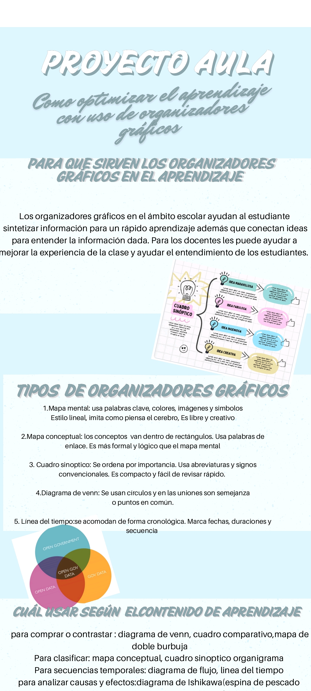
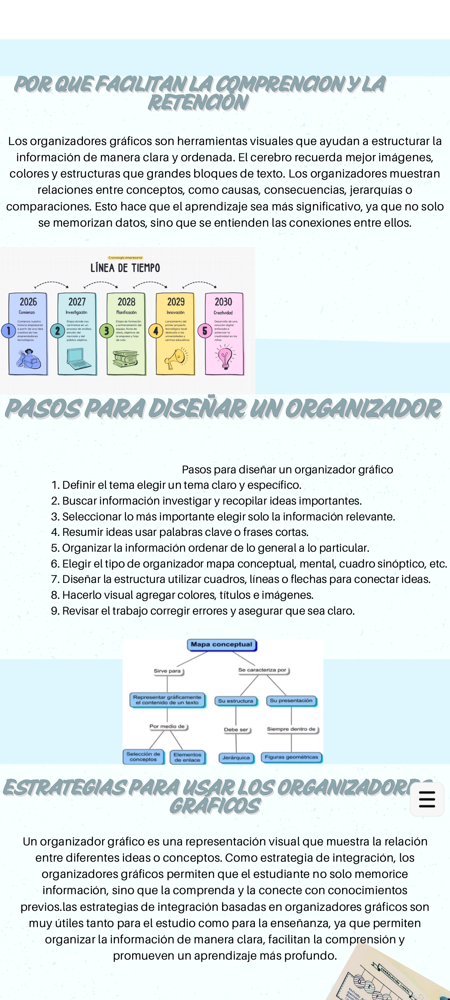

HISTORIA II
ANA SALOME CARRASCO ENRIQUEZ
La maestra Salome nos pidió hacer una infografia sobre los problemas de aprendizaje y el abandono en la media superior en el cual mis compañeros de equipo me ayudaron a investigar diversas causas y consecuencias respecto al tema, tambien incluimos algunos acontecimientos historicos que tenian que ver con el tema que habia solicitado. Finalmente el trabajo fué ordenado y adornado de modo que la infografia se viera presentable

